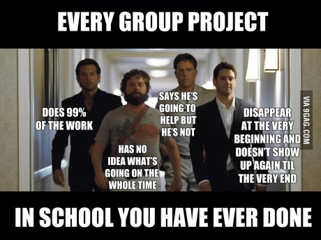

We use the online peer evaluation system TEAMMATES to conduct three rounds of peer-evaluations to determine the level of contribution from each member. During peer-evaluations, you will be asked to estimate the contribution of each team member (including yourself) to the project so far. The system also allows you to give anonymous feedback to your teammates.

Peer evaluation round 1 will be used to give early feedback to those who the team thinks are ‘not contributing enough’. This round will not affect your grade.
Rounds 2 and 3 may affect your grade in the following way:
Peer evaluations are not visible to undergraduate tutors.
If you disagree with the team’s opinion, i.e., you think the perceived contribution is significantly different from what you actually contributed, you can help us grade you fairly by submitting an individual report (‘individual report’ is explained under V0.5 deliverables).
Keep in mind the contribution numbers reported by TEAMMATES are based on team member perceptions and may not reflect your real contribution. We use those numbers primarily to identify cases that need further investigation.
You may ignore minor variations in the contribution numbers reported by TEAMMATES. For example, the difference between [Equal share] and [Equal share - 2%] is not significant and can very well be due to rounding off within the system.
Also keep in mind that it is human nature for one to downplay the value of contributions from others when one’s own contribution is being compared to that of others. As a result, it is common for the ‘perceived contribution’ to be somewhat lower than what you actually did.
If you are unhappy about the peer-feedback received and would like to make your views known to the team, please allow at least one day to lapse before you fire off a response email. You are likely to respond more rationally when you had some time to think it over. Also keep in mind that we do take note of how well you handle such a situation. You need to act professionally when facing conflicting views, opposition, and even deliberate sabotage.
A final note on this issue :
Please be sincere about how much you can do from the beginning, rather than let your team members figure it out over the long run. Tell them how much you can do and what kind of work you are willing to do. If you are not open about it, they will still figure it out at the end; they will still report it (via the peer-evaluations), and your score will be adjusted all the same. Being open about it on the other hand can save everyone a lot of frustrations, unpleasantness, and bitterness.
